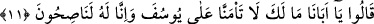
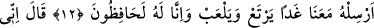
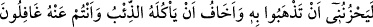
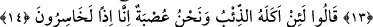

KARDEŞLERİNİN YÛSUF’U
BABALARINDAN İSTEMESİ
11. “Dediler ki: “Ey babamız, neden Yûsuf’u bize güvenmiyorsun? Oysa biz
sadece onun iyiliğini düşünenleriz.”
12. “Yarın onu da bizimle beraber gönder, bol bol yesin, oynasın; biz onu elbette
koruruz.”
13. (Babaları) Dedi ki: “Onu götürmeniz beni üzer. Siz ondan habersizken onu
kurt yemesinden korkarım.”
14. “Dediler ki: “Biz bir topluluk olduğumuz halde, onu kurt yerse, o zaman biz
gerçekten âciz kimseler sayılırız.”
Rivâyet edilir ki Yûsuf’un kardeşleri Yahuda’nın görüşü üzerinde ittifak ettiler.
Babalarının yanına gelip şöyle dediler: “Bahar geldi, her taraf yeşerdi. Ne olur Yûsuf’u
bizimle kıra gönderseniz de bir gün etrafı temâşâ etse, gezip dolaşsa.” Yâkub (a.s.):
“Yûsuf’un yanağındaki baharın güzelliğinden ayrı kalarak bülbül gibi benim gözümün
hazan olmak istemesi revâ değildir. Siz gülzara gidin, ben hicran dikeni hanesinde
tutulup kalayım, öyle mi?” diye cevap verdi.
Dostlar zevk u safâ baharında gülerler
Ben gam bucağında dertliler gibi kederli ve mahzun
Oğulları Yâkub (a.s.)’ın sözleri karşısında diyecek bir şey bulamadılar. Yûsuf’un
yanına varıp şöyle dediler:
Gül mevsimi iki üç gündür, ganîmet bilin
Ki başka vakit hazan yağması olmak ister
Yûsuf temâşâ sözünü işitince onun mübârek hâtırı kıra gitmeyi arzu etti. Kardeşleri ile
birlikte babasının önüne geldi. Babasının izin vermesini ricâ etti. Kardeşlerinin
kendisine söylediği sözün mazmûnunu Yâkub (a.s.)’a arz etti.